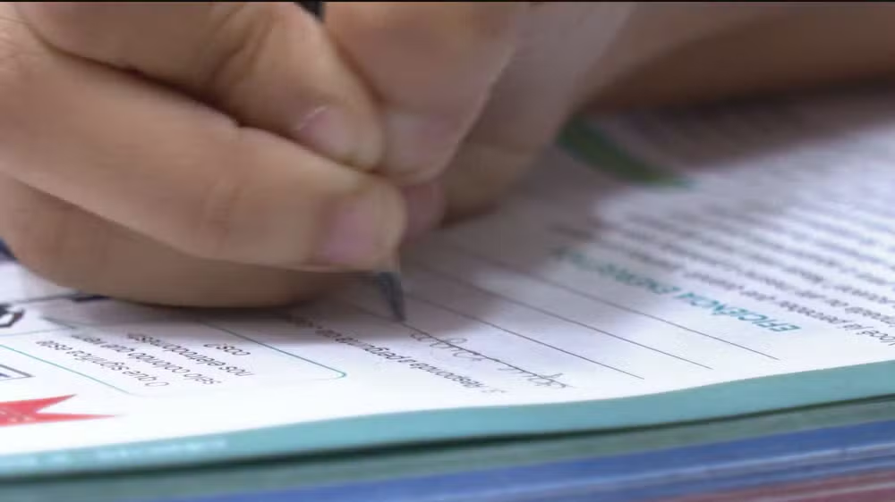

Estudante do CEFET que transformou a vontade de ensinar matemática em uma plataforma.
Idealização, design e desenvolvimento
“crede, ut intelligas”
Incentivo: O que me incentivou a desenvolver este site foram dados obtidos pelo Programme for International Student Assessment (Pisa) que apontaram que a cada 7 em 10 alunos de 15 anos no Brasil não sabem fazer contas de matemática simples.

Fonte: G1 · Imagem: crédito indicado na matéria
Ler a matéria completaAlém disso, pesquisadores indicam que para aprender determinado assunto a forma mais eficiente possível é estudando de forma ativa, ou seja, no caso da matemática, realizando várias questões.
Fonte: Estado de Minas (Em foco) · Imagem: crédito indicado na matéria
Ler a matéria completaCom todos esses dados obtidos durante uma pesquisa, isso me motivou muito a realizar este site.
Objetivos: Ajudar estudantes a se prepararem para o Enem e, além disso, possuir um banco de perguntas filtrado de fácil acesso para auxiliar no estudo da matemática. Ajudar professores de matemática a montarem seus materiais de aula.
O Math Magic é gratuito e feito por um estudante. Se ele te ajudou, qualquer contribuição ajuda a manter e melhorar o projeto. Aponte a câmera para o QR Code ou copie a chave Pix.
Favorecido: Miguel Antônio de Souza Moreira
Sem condições de contribuir? Você também ajuda avisando sobre erros ou sugerindo questões: miguelantoniodesouzamoreira@gmail.com
Pela estrutura e pelo incentivo ao longo do projeto.
Maurílio e Odilon Côrrea, pela orientação e pelos incentivos ao longo do projeto.
Responsável pelo ENEM, de onde vêm as questões do site.
Ferramentas livres usadas no layout e na escrita das fórmulas.
Math Magic · 2026